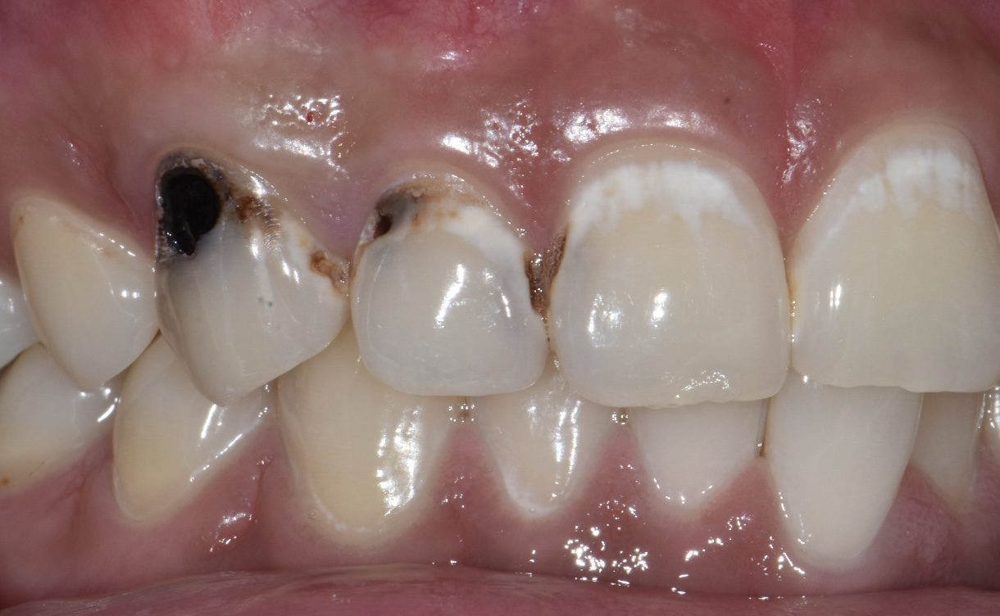
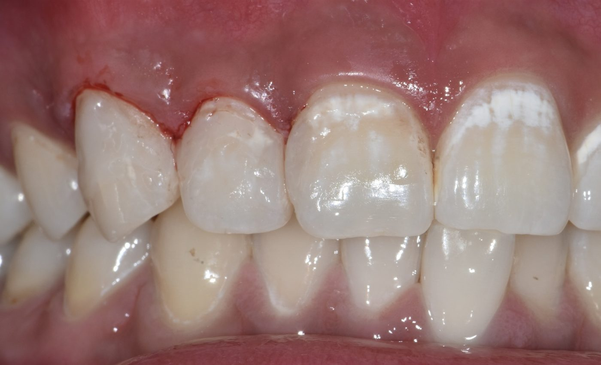
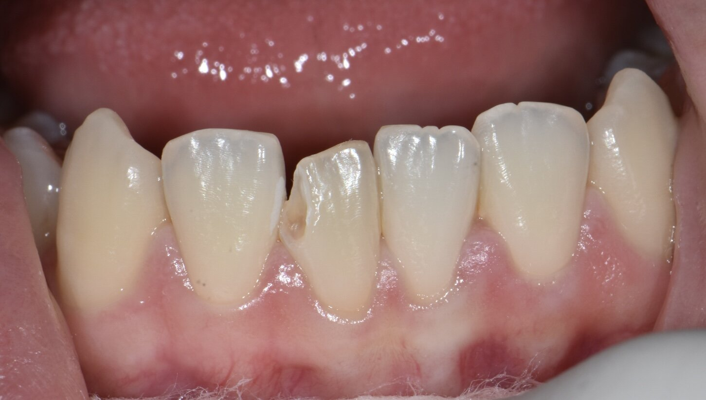
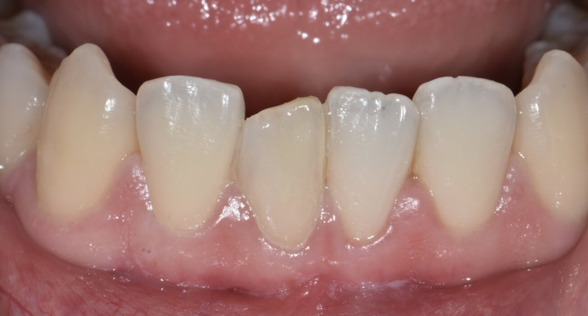
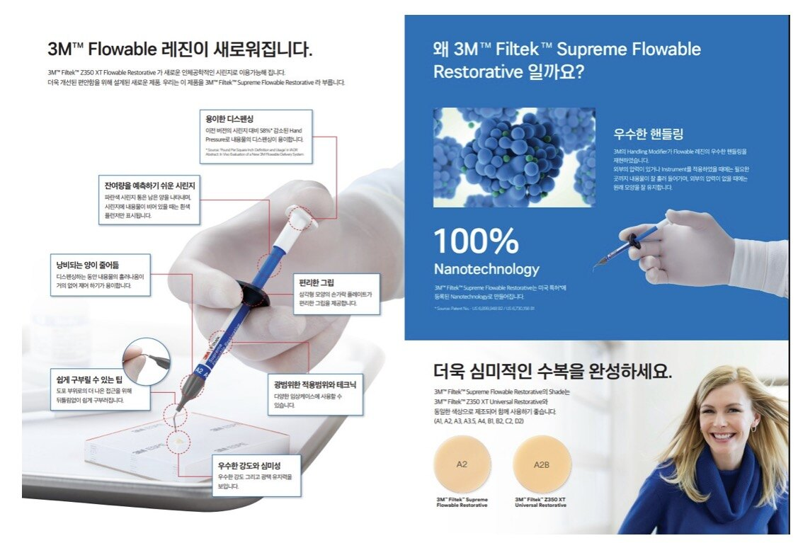

3사단 의무대대 치과
3사단 의무대대 치과충치 치료
우식의 깊이와 범위에 따라 수복에서 근관치료까지 단계적으로 진행합니다.




Courtesy of Dr. Lee Won Woo


레진 수복에는 3M Filtek을 비롯한 프리미엄 수복 재료를 사용합니다. 나노 필러 레진으로 강도와 표면 광택을 오래 유지하고, 자연치와 같은 색조를 골라 경계가 드러나지 않게 수복합니다.
제품 이미지: 3M 제품 안내 자료
- 최소 삭제 원칙에 따른 직접 레진 수복
- 치수까지 진행된 우식은 근관치료 후 수복
- 파절·외상 치아의 당일 응급 처치
- 파노라마 및 구내 방사선 촬영으로 인접면 우식 진단
- 통상 1~3회 내원, 근관치료는 3~4회